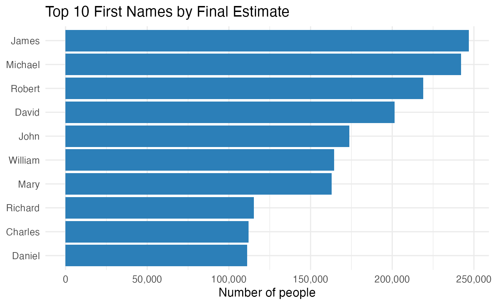

Getting started with a4syahpradana
getting-started.RmdOverview
The a4syahpradana package provides tools to explore the
most common American names. It contains a cleaned dataset
(common_names), a helper function for ranking and summarising names, and
a Shiny dashboard for interactive visualisation.
This vignette walks through the typical workflow, from exploring the dataset, to ranking and visualising names, and finally launching the dashboard.
Loading Dataset
The dataset common_names includes first and last names
along with baseline (estimate) and adjusted (final_estimate) population
counts.
data("common_names")
head(common_names)
#> # A tibble: 6 × 6
#> first_name surname clean_name adjustment estimate final_estimate
#> <chr> <chr> <chr> <dbl> <dbl> <dbl>
#> 1 James Smith james smith 21.1 25838. 31290.
#> 2 Michael Smith michael smith 5.6 29276. 30915.
#> 3 Robert Smith robert smith 8.7 24005. 26094.
#> 4 David Smith david smith 10.8 22614. 25056.
#> 5 James Johnson james johnson 9.6 20498. 22466.
#> 6 Michael Johnson michael johnson -4.8 23226. 22111.The total rows and columns are as follow:
Data Dictionary
The following table describes the variables included in the dataset.
tibble::tibble(
variable = c("first_name","surname","clean_name",
"adjustment","estimate","final_estimate"),
type = c("character","character","character",
"numeric","numeric","numeric"),
description = c("Given name","Family name",
"Standardised full name key",
"Adjustment applied to baseline",
"Baseline count (people)",
"Adjusted count (people)")) |>
knitr::kable(caption = "Variables in `common_names`")| variable | type | description |
|---|---|---|
| first_name | character | Given name |
| surname | character | Family name |
| clean_name | character | Standardised full name key |
| adjustment | numeric | Adjustment applied to baseline |
| estimate | numeric | Baseline count (people) |
| final_estimate | numeric | Adjusted count (people) |
Ranking the most common names
The function top_ranked_names() summarises the data and returns the top names based on either baseline or adjusted counts.
Below is the example of displaying the top 10 first names ranked by final estimate.
top10 <- top_ranked_names(type = "first",
measure = "final_estimate",
n = 10)
top10
#> # A tibble: 10 × 2
#> name Count
#> <chr> <dbl>
#> 1 James 246825.
#> 2 Michael 242106.
#> 3 Robert 218994.
#> 4 David 201478.
#> 5 John 173733.
#> 6 William 164474.
#> 7 Mary 162912.
#> 8 Richard 115193.
#> 9 Charles 112048.
#> 10 Daniel 111114.Visualising top-ranked name
In order to make the results easier to interpret, we can create a simple plot.
top10 <- top_ranked_names(type = "first",
measure = "final_estimate",
n = 10) |>
dplyr::rename(name = 1, count = 2)
ggplot(top10, aes(x = reorder(name, count), y = count)) +
geom_col(fill = "#2C7FB8") +
coord_flip() +
ggplot2::scale_y_continuous(labels = scales::comma) +
labs(x = NULL, y = "Number of people",
title = "Top 10 First Names by Final Estimate") +
theme_minimal(base_size = 13)